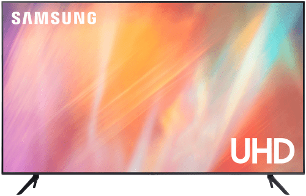
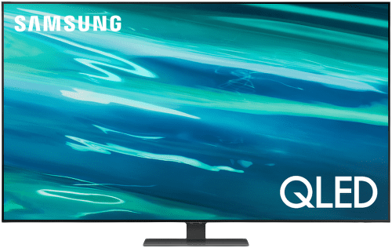

Kompaktný Smart LED televízor v čiernom farebnom prevedení vás vtiahne do sveta skvelého obrazu a realistických farieb, ktoré sprostredkuje obrazovka v spolupráci s Full HD rozlíšením, vysokým dynamickým rozsahom HDR a lokálnym stmievaním Micro Dimming Pro. Špecifikom je technológia PurColor (dokáže poskytnúť verné zobrazenie farieb) či funkcie ako Ultra Clean View (zabezpečí čisté, ostré a jasné zobrazenie jednotlivej scény) a Contrast Enhancer (odhalí detaily a dodá im hĺbku). Na jednoduchú manipuláciu poslúži jediný ovládač One Remote (aj na ovládanie herných konzol, set-top boxov či aplikácií), no s určitosťou poteší aj zabudovaná funkcia Apple AirPlay 2.
Parametre:
Uhlopriečka: 32" (81,28 cm)
Šírka: 73,74 cm
Výška: 46,54 cm
Hĺbka: 15,05 cm
Cena: 299,00 €
SAMSUNG UHD

UHD TV
Minimalistický Smart LED televízor v tmavosivom prevedení s dômyselným procesorom vás vtiahne do sveta dokonalého obrazu, jemných detailov a realistických farieb, ktoré sprostredkuje obrazovka so skvelým 4K Ultra HD rozlíšením. Pre ešte lepší zážitok zo sledovania poslúži kombinácia technológií PurColor či Motion Xcelerator (pre plynulý a ostrý pohyb) s vysokým dynamickým rozsahom (HDR) a efektívnym 4K Upscaling. Zvuk zladený s premietaným obrazom zaobstará technológia Dolby Digital Plus v spolupráci s dvojicou reproduktorov.
Parametre:
Uhlopriečka: 55" (139,7 cm)
Šírka: 123,05 cm
Výška: 78,33 cm
Hĺbka: 5,99 cm
Cena: 639,00 €
SAMSUNG QLED

QLED TV
Ultratenký bezrámčekový Smart QLED televízor vás vtiahne do sveta neuveriteľne dokonalého obrazu a realistických farieb, ktoré sprostredkuje obrazovka so skvelým 4K Ultra HD rozlíšením. Pre lepší zážitok zo sledovania filmov poslúži kombinácia priameho zadného podsvietenia panelu Direct Full Array a technológií Quantum HDR 1500 (bohaté farby a sýty kontrast), Quantum Dot (100% farebný objem), Multi View (obrazovku budete môcť rozdeliť na 2 časti s nezávislým obsahom) či funkcie Adaptívny obraz. Zvuk zladený s premietaným obrazom zaobstará kalibrácia zvuku SpaceFit Sound a herné obzory rozšíri vylepšenie pohybu 4K 120 Hz, doba odozvy pod 10 ms.
Parametre:
Uhlopriečka: 65" (165,1 cm)
Šírka: 144,65 cm
Výška: 90,57 cm
Hĺbka: 28,91 cm
Cena: 1 199,00 €
SAMSUNG NeoQLED
Neo QLED
Ultratenký bezrámčekový Smart Neo QLED televízor s dômyselným procesorom Neo Quantum Processor 4K vás vtiahne do sveta neuveriteľne dokonalého obrazu, ktorý sprostredkuje antireflexná obrazovka v spolupráci so skvelým 4K Ultra HD rozlíšením. Pre ešte lepší zážitok zo filmov poslúži kombinácia technológií Quantum Matrix Technology (ovláda podsvietenie nezávisle v jednotlivých zónach obrazu), Quantum HDR 1500 (bohaté farby a sýty kontrast), 4K Upscaling (zlepšovanie obrazu v nízkej kvalite), Quantum Dot (100% farebný objem), Multi View (obrazovku budete môcť rozdeliť na 2 časti s nezávislým obsahom) či funkcia Adaptívny obraz. Zvuk zladený s premietaným obrazom zaobstará technológia zvuku sledujúceho pohyb (OTS) či kalibrácia zvuku SpaceFit Sound a herné obzory rozšíri vylepšenie pohybu 4K 120 Hz, doba odozvy pod 10 ms, pomery obrazovky 21 : 9 a 32 : 9 či technológie Motion Xcelerator Turbo+ a AMD FreeSync Premium Pro.
Parametre:
Uhlopriečka: 65" (165,1 cm)
Šírka: 144,63 cm
Výška: 89,36 cm
Hĺbka: 29 cm
Cena: 1 499,00 €
SAMSUNG 8K
QLED8K
Špičkový Smart QLED televízor vás vtiahne do sveta neuveriteľne realistického a skutočne dokonalého obrazu. Ponúkaný je v nadčasovom dizajne. O fenomenálny divácky zážitok sa postará 8K rozlíšenie s 33 miliónmi obrazových bodov. Vyznačuje sa neobyčajnou hĺbkou farieb, skvostnou čistotou, ostrosťou a dokonalým detailným zobrazením. Na zlepšovanie obrazu v nízkej kvalite televízor využíva pokročilú umelú inteligenciu. Na ničím nerušený chod televízora vám postačí jeden kábel. Ak práve televízor nesledujete, režim Ambient Mode ponúkne pridanú hodnotu zariadenia – napríklad doplní interiér zobrazením ladiacich farieb.